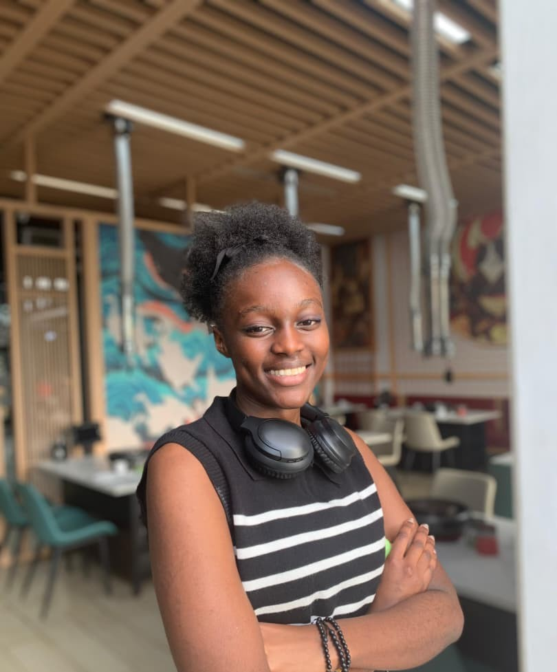

Software Engineering Student | Machine Learning Focus
I am a software engineering student learning by building and breaking real systems. My work focuses on understanding how software behaves in real environments from intranet deployments and Linux systems to backend logic and reliability. I value discipline, clarity, and long-term thinking over shortcuts.
